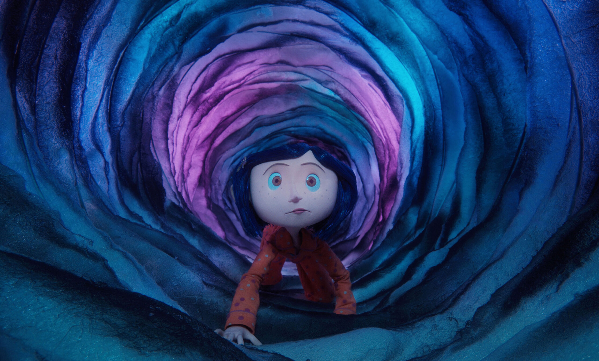

Coraline Jones (a la que presta su voz Dakota Fanning) es una niña de 11 años llena de vida, de curiosidad y mucho más aventurera de lo que haría suponer su edad. Acaba de trasladarse con sus padres (Teri Hatcher, John Hodgman) de Michigan a Oregón. Echa de menos a sus amigos, y al ver que sus padres están desbordados por el trabajo, decide encontrar alguna distracción en el vecindario. Wybie Lovat (Robert Bailey Jr), un chico de su edad que vive en el barrio, quiere ser su amigo, pero ella le considera un pesado. Visita a sus vecinas, dos excéntricas actrices inglesas llamadas Srta. Spink y Srta. Forcible (Jennifer Saunders y Dawn French) y al aún más excéntrico ruso Sr. Bobinsky (Ian McShane). Después de estas experiencias, Coraline empieza a dudar seriamente de si su nuevo hogar le ofrecerá alguna diversión... Pero se equivoca. Descubre una puerta secreta dentro de su casa. Basta con cruzar el umbral de la puerta y recorrer un lúgubre pasillo para entrar en otra versión de su vida. Aparentemente, esta realidad paralela es parecida a su vida, pero mejor. Los adultos, entre los que se encuentra una amabilísima Otra Madre (también con la voz de Teri Hatcher), parecen mucho más cariñosos. Incluso el misterioso Gato (Keith David) es más simpático. Coraline empieza a pensar que pertenece a este Otro Mundo. Pero cuando la asombrosa y fantástica visita empieza a hacerse peligrosa y la Otra Madre planea retenerla para siempre, Coraline deberá recurrir a toda su inventiva, determinación y valentía para regresar a casa y salvar a su familia.
Henry Selick
OTRAS PELÍCULAS DE HENRY SELICK